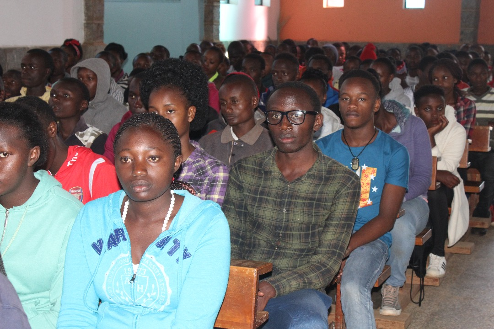
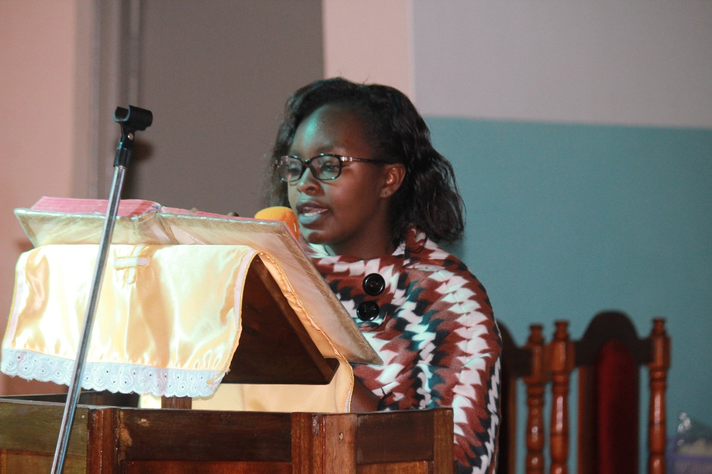
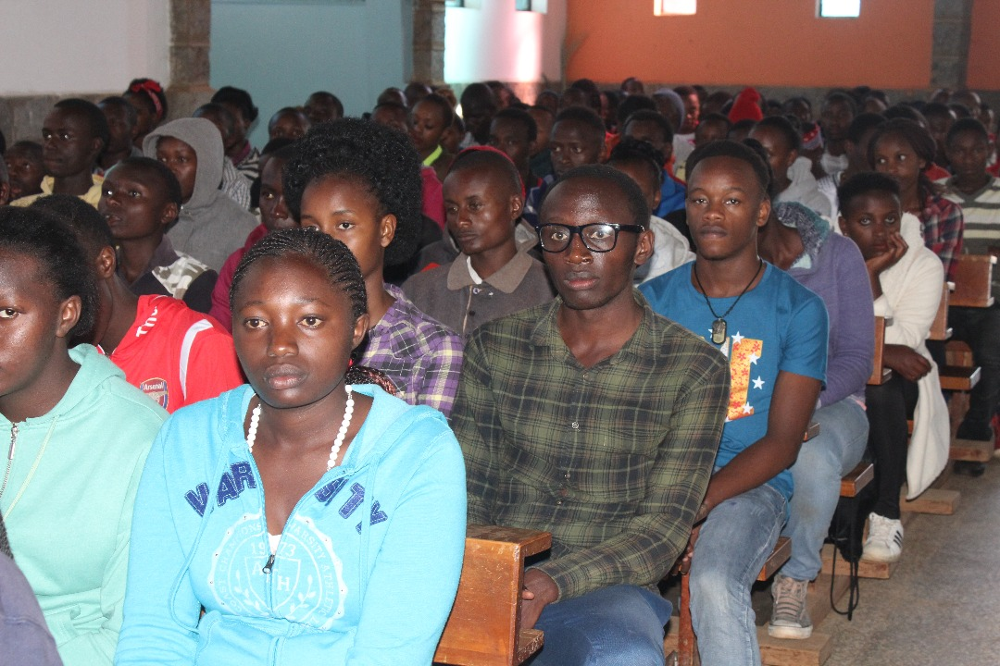
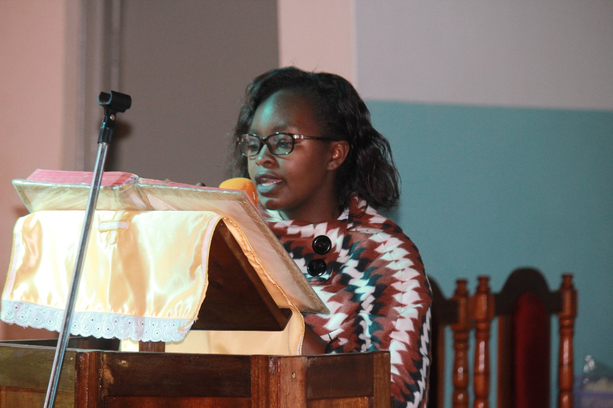

General Vision Statement
To be witnesses and missionaries of Christ to the world inspired and guided by the values of the Gospel and teachings of the Church
About the Catholic Youth
The Catholic Archdiocese of Nairobi Youth are spread out over more than 110 Parishes within the Archdiocese which covers both Nairobi and Kiambu Counties. There are well over 500,000 youth in all these parishes. A majority of these are engaged in various ways and in the different pastoral structures that the youth are grouped in. The MYM are the youth who are aged between 12/13 – 17/18 or those specifically in high school. The YFC are those aged between 18 – 26 while YACA are youth aged between 27 – 35 years of age. These divisions are intended to better assist in the growth of the youth and to ensure that each group does not have a huge disparity of age and experience among them.
Leaders
Dominic K. George
Archdiocese of Nairobi Youth Cordinator
Hello!
I am so glad to spend most of my life at the service of the youth and to join hands with all of you to help in building the City of God’s People.
The words of our universal Shepherd, Pope Francis moves me deeply, “Even when the journey is uncertain and you fall, God, rich in mercy, will extend his hand to pick you up.” These are the words he used when he sent that beautiful letter to all the youth in the Church in preparation for the upcoming Synod.
The reason the words above move me and I believe, moves most of us is the fact that many times we feel that we have not lived up to the requirements of the faith, the values of the gospel and the teachings of the Church. Sometimes when we look at our country and the general economy and politics, we might feel overwhelmed and at times without knowing what the future holds but His Holiness reminds each of us about the Mercy of God that triumphs over every fear, doubt and sin. Let us go forward hearts ashamed of our sin but above all, confident in His Mercy.
Pope Francis also adds, “Abram received a compelling invitation, a challenge, to leave everything and go to a new land. What is this "new land” for us today, if not a more just and friendly society which you, young people, deeply desire and wish to build to the very ends of the earth?”
We young people need to step up our level of commitment and involvement in designing and reshaping the destiny and character of our nation. Let us be part of history, knowing by faith that Jesus is with us until the end of times! I pray for all of you that we might find true happiness in serving God and each other and I invite you to courageously give your energies and talents to make the world a better place and to respond to God’s plan for our lives!


 


